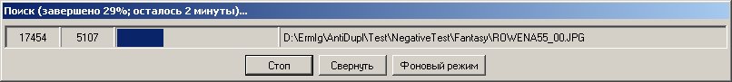

Окно прогресса поиска
Окно прогресса поиска появляется во время выполнения поиска программой и имеет следующий вид:
В заголовке окна отображается в процентах количество выполненной работы, а также приблизительное время, которое требуется программе для окончания поиска.
Далее расположена таблица, в колонках которой отображаются следующие данные:
Общее количество найденных картинок.
Количество уже проверенных картинок.
Графическое отображается процента выполненной работы. Причем темно синим цветом отображается количество полностью проверенных картинок, а светло синим - количество картинок, готовых к проверке (загруженных с диска или из базы данных).
Название картинки или директории, проверяемой в текущий момент времени.
Еще ниже в окне располагаются три кнопки:
Стоп - с помощью этой кнопки можно досрочно остановить поиск. Так же поиск можно остановить нажатием клавиши Escape.
Свернуть - если нажать на эту кнопку, то программа будет свернута на панель инструментов. При этом во всплывающем окне будут отображаться данные, которые ранее отображались в заголовке окна. Для чтобы вернуть программу в исходное состояние, достаточно просто щелкнуть по ней мышкой. Заметим, что при завершении поиска программа автоматически вернется в исходное состояние.
Фоновый режим - с помощью этой кнопки можно свернуть программу в системное меню. При этом приоритет выполнения приложения будет уменьшен. Если подвести мышку к значку программы в системном меню
, то во всплывающем окне будут отображаться в процентах количество выполненной работы, а также приблизительное время, которое требуется программе для окончания поиска. Вернуть программу в исходное состояние можно при помощи двойного щелчка мыши по значку программы в системном меню. При завершении поиска программа автоматически возвращается в исходное состояние.